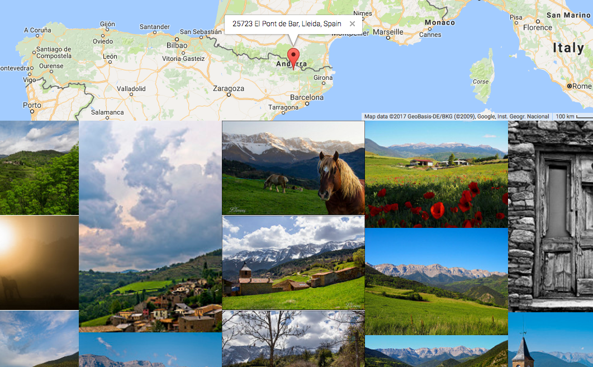

Be an armchair explorer, a world traveller, a road-trip planner, an observer and witness to the beauty of our world.
See the World is a simple application. Either use your mouse or 2 fingers to scroll around the map and find a location you want to explore. Click to see photos that Flickr users have geotagged in that location.
Google Maps reverse-geocoding will provide you with the name of the nearest location possible so you can learn more about the places you find.
If there are no photos tagged in your selected location, don't worry. We'll provide a curated selection of photos from Flickr to keep you inspired. Just keep clicking.